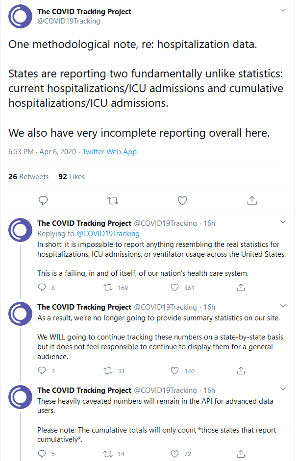

Hospitalized Data is Unusable
Issue number 162
TraceGroot opened this issue on April 7, 2020 at 1:26 am
For “States Historical Data”, there used to only be the single field, “hospitalized”. A few days ago, two more related fields were added, “hospitalizedCurrently” and “hospitalizedCumulative”.
The problem is that data is not consistently in either “hospitalized” or “hospitalizedCumulative”. So some states have empty fields in one while other states have empty fields in the other. In addition, some states have both of those fields empty, with the only number being in “hospitalizedCurrently”.
That inconsistency makes the hospitalization data useless, as is. You can’t even set up a simple plot anymore without doing some serious massaging of the data in order to try and wrangle these three fields into something meaningful.
Comments
Duplicate of #132 and you can find the resolution process on that issue
@TraceGroot Yes. This is an inherent issue with the way states are reporting the hospitalizations data.
This was also the reason the project will no longer report overall US hospitalizations 
https://twitter.com/COVID19Tracking/status/1247296434698719232